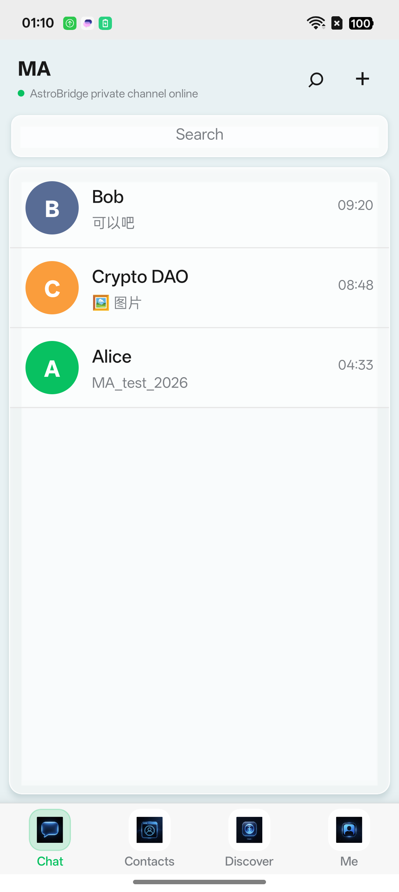
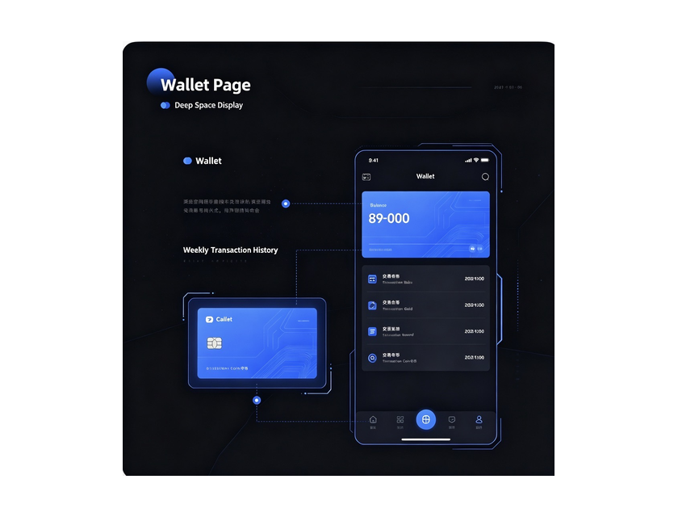

Focused private chat专注私聊
Direct P2P message delivery with presence and delivery state synchronization.
通过专属 P2P 通道精准投递消息，并同步在线与送达状态。
MA brings familiar, effortless messaging together with a self-custody wallet and signed P2P delivery.
MA 将熟悉顺手的即时聊天、自托管钱包与签名 P2P 投递融为一个入口。

wss://p2p************/chat
MA keeps the interaction calm and familiar while placing identity, value, and network control in your hands.
MA 保持安静、熟悉的交互体验，同时把身份、价值和网络控制权交回你手中。
Direct P2P message delivery with presence and delivery state synchronization.
通过专属 P2P 通道精准投递消息，并同步在线与送达状态。
Send value from the same place you speak, without breaking the conversation.
无需跳出会话，在聊天中直接发起价值转移。
Asset view, transfer, receive, swap entry, and transaction history in one app.
资产、转账、收款、兑换入口与交易记录集中管理。
Wallet signatures authenticate the connection without handing over custody.
用钱包签名认证连接，不交出资产托管权。
See AstroBridge API, P2P channel, node health, and queue state directly.
直接查看 API、P2P 通道、节点健康度与队列状态。
Use QR entry points for addresses and streamlined value actions.
通过二维码识别地址，快速完成价值操作。

MA makes a transfer feel like a natural part of conversation while keeping signature confirmation visible and deliberate.
MA 让转账自然融入会话，同时保留清晰、可确认的钱包签名步骤。
https://************.oneAssets, transaction broadcast, intent submission, user validation, and ecosystem APIs.
承载资产查询、交易广播、意图提交、用户校验与生态接口。
wss://************/chatReal-time private messages, presence synchronization, and signed P2P transport.
承载实时私聊、状态同步与签名 P2P 传输。
MA for Android is entering active product testing. The official download will be published here after release signing and final security review.
MA Android 版正在进行产品测试。完成正式签名与最终安全审查后，官方下载将在这里发布。
Visit AstroBridge访问 AstroBridge